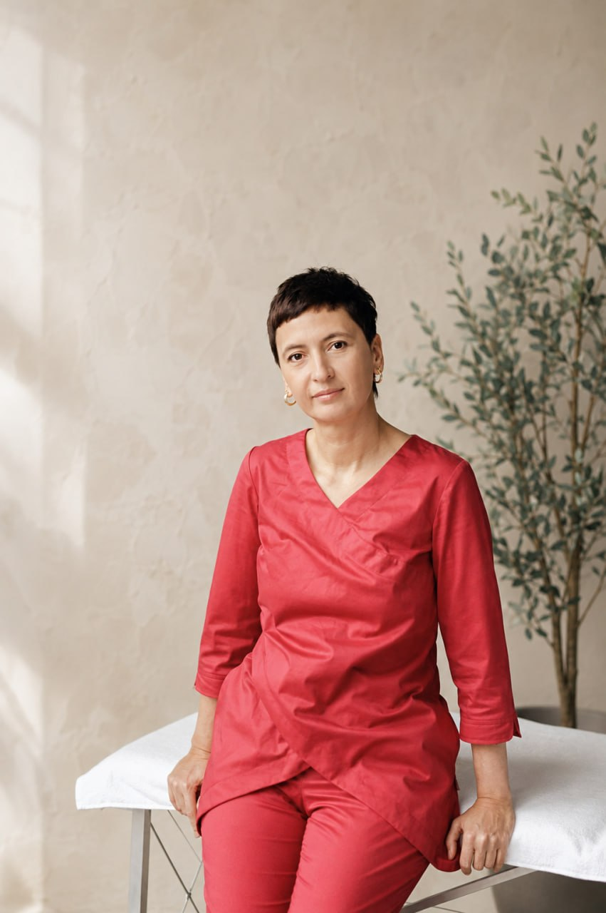
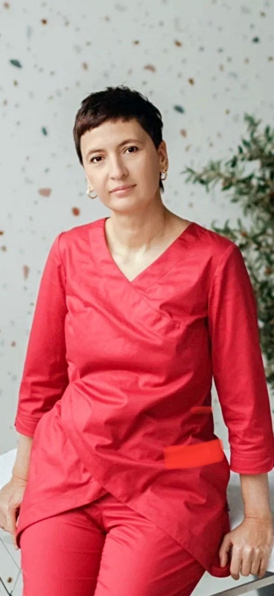
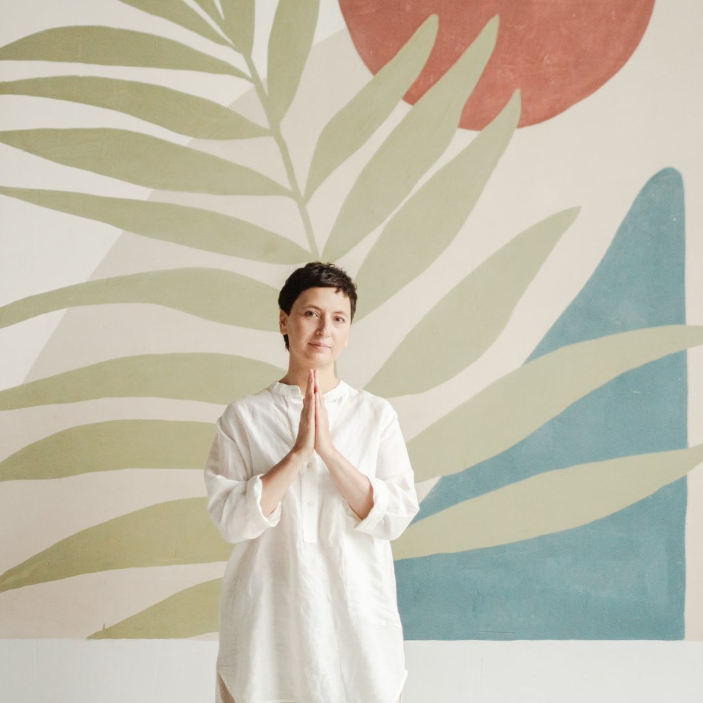

О Мастере
«Юля, у меня колено», — говорит человек в начале сеанса.
Мы начинаем с колена. Оно честно болит, мешает ходить, не даёт спать и требует, чтобы им наконец занялись. А потом в разговоре появляются травма, после которой всё началось, работа без выходных, мать, которой снова нужна помощь, развод, переезд, страх и усталость размером с небольшую страну.
Тело вообще плохо разбирается в нашей системе хранения файлов. Оно не раскладывает по разным папкам операцию, роды, нервный срыв, семейную историю и три года жизни на сжатых зубах. Оно приносит всё сразу. Иногда в колене.
Меня зовут Юлия ОздеМир. Больше четырнадцати лет я работаю с людьми методами биодинамики, остеопатии и Рэйки. Я мастер Рэйки, автор и ведущая Игры «Прикосновение Рэйки». Но половину этого времени я действительно делаю вид, что лечу коленки.
Потому что ко мне часто приходят в момент, когда старая система жизни уже трещит, а новая ещё не собрана. Человек пока ходит на работу, отвечает на сообщения, кормит детей и даже улыбается в нужных местах. Только тело больше не вывозит этот спектакль одного актёра.
В такой точке бесполезно говорить «расслабьтесь», выдавать готовые решения и обещать, что через час всё пройдёт. Я остаюсь рядом, слушаю и держу работу там, где человеку одному уже слишком тяжело. Без давления, спасательства и попытки срочно сделать из него исправную версию самого себя.
Я называю себя Energy Companion. Не спасатель с надувным кругом и не проводник, который лучше вас знает дорогу. Человек с фонарём, который идёт рядом, пока вы проходите сложный участок.
Так устроены и мои семинары Рэйки, и Игра «Прикосновение Рэйки». Метод там служит дверью. За ней человек встречается с собой, своими смыслами, родом, полем и тем невидимым, что почему-то очень хорошо умеет определять нашу вполне видимую жизнь.
Сейчас я и сама стою на таком переходе: между странами, прежним способом работать и новым двенадцатилетним циклом практики. Поэтому тех, кто оказался где-то между, я узнаю быстро. Я знаю, как выглядит место, где назад уже тесно, а вперёд пока страшно.
Но если вы пришли с коленом, не волнуйтесь.
С колена и начнём.


